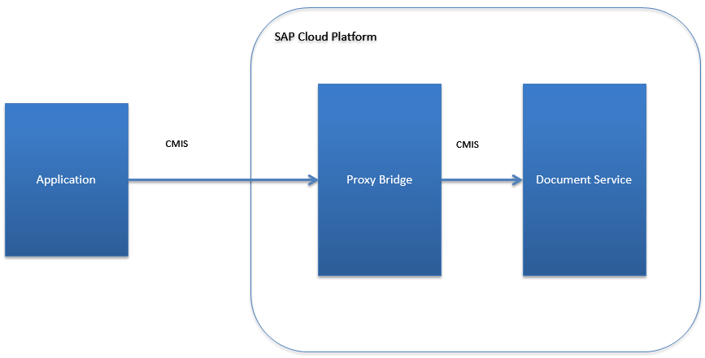

The services on SAP Cloud Platform can be consumed by applications that are deployed on SAP Cloud Platform but not from external applications. There are cases, however, where applications want to access content in the cloud but cannot be deployed in the cloud.
The figure below describes a mechanism with which this scenario can be supported and is followed by an explanation:
This can be addressed by deploying an application on SAP Cloud Platform that accepts incoming requests from the Internet and forwards them to the document service. We refer to this type of application as a proxy bridge. The proxy bridge is deployed on SAP Cloud Platform and runs in an account using the common SAP Cloud Platform patterns. The proxy bridge is responsible for user authentication. The resources consumed in the document service are billed to the SAP Cloud Platform account that deployed this application.